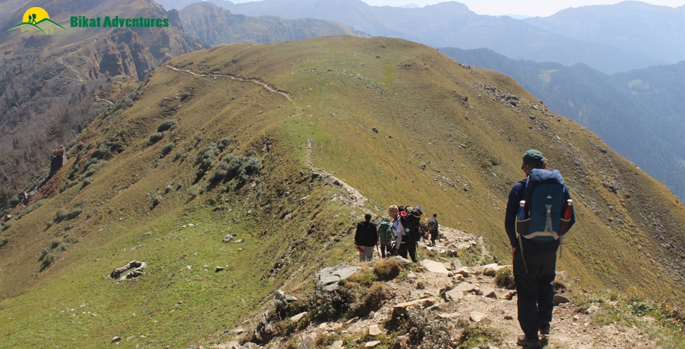
Phulara Ridge Trek
Trek with the longest ridge walk
Available Batches
Available Batches
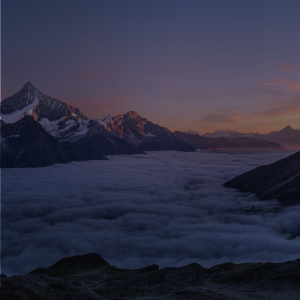
Brief Description

Brief Itinerary
Detailed Itinerary
Day 1
Drive from Dehradun (640M) to Sankri (1,950M)
Distance: 197 kms
Duration: 9-10 hours
The journey to Sankri begins from the capital city of Uttarakhand, Dehradun. If you have opted for transportation by Bikat Adventures, please ensure you board your vehicle from ISBT Dehradun latest by 7 AM. If you are traveling on your own to Sankri, the article below could come in handy in planning your trip.
How to Reach the Famous Base Village, Sankri
Sankri is located at a distance of 197 km from Dehradun and would take about 9-10 hours to cover, taking us to an altitude of 1,950M. It takes close to 2 hours and 20 km to cross through the city, after which the road starts to gain elevation and reveals a stunning cityscape of Dehradun. About 33 km in, the drive takes us through the spectacular hills of Mussoorie and the renowned Kempty falls. The roads here are long and winding and swift mountain streams run parallel to the roads in many sections.
After crossing Mussoorie, the landscape changes distinctly. Deep gorges are replaced by a canopy of blue pine forests that carry the fresh scent of the woods with the holy Yamuna River accompanying us throughout. Once we cover a distance of 140 km, we enter into a charming little village called Purola, our lunch point. We can wait for a while here and soak in the raw Pahadi (mountain lifestyle) culture and colours. The final stretch of 22 km to Sankri, however, steals the show as we drive through the infamous Govind National Park that is home to a plethora of exotic flora and fauna. The roads can be rough in some sections but the breathtaking views of the dense conifer forests, Tons River Valley and scattered apple orchids more than make up for the bumpy ride.
Expect to reach Sankri by 5 PM. Sankri is a lush green village that hosts some unparalleled views of Mt. Swargarohini, especially during sunset. During the peak winter season, that is December to February, snow starts to make an appearance from the entry of the village itself. We spend the night in homestays.
After check-in, we will be left with enough time to freshen up and explore the surrounding areas.
Day 2
Sankri (1,950M) to Juda Ka Talab (2,773M)
Distance: 5 kms
Duration: 5 hours
The gradient for today’s trail is a mix of easy ascents and flat stretches. There are 2-3 water sources on the way as we gain a total of around 700 meters of altitude across 5 km.
We leave the accommodation by 9 AM and walk for a few minutes towards the entry point of the trek. Within a few 100 meters, the roadway ends, giving way to a trail route which takes us through the forest area. As we enter, small shrubs and tall pine trees accompany us on both sides of the trail. About 30 minutes and 1 km in, we are in the middle of a proper jungle with a mix of other trees like deodar, oak, and rhododendrons. Keep your ears sharp, eyes peeled and look up. You can hear and spot some exotic birds on treetops. Now look down, and you will notice squishy moss and brown ferns growing on the sides of small boulders. This setting continues for the next kilometer through a thicker region of the forest.
At the end of 2 km, we arrive at the first dhaba (canteen) of the day. The trail from the dhaba mildly ascends for 1 km and stops at a clearing. The iconic Basuriwala dhaba (flutist’s canteen) is located here. A hot cup of tea and some divine music from the flutist is a delectable delight you can never get in the city.
Beyond the clearing, we enter into the forest area again. The trails mildly ascend for another 1 km and land on a second clearing. Compared to the first grassland, the second clearing is fairly small in diameter. It provides for a good space to rest a while. Half a kilometer from the second clearing, a stunning lake appears in front of us. This is the legendary JKT – Juda Ka Talab. We stop here for lunch near the lake.
JKT – Juda Ka Talab is a famous alpine lake of the Sankri region. Legends believe that the almighty Lord Shiva was looking for a place to meditate. When he entered this clearing, he removed a few strands of hair from his head (juda – strands of hair) and made a divine lake here (talab meaning Lake). To sit next to the emerald green lake and observe the reflection of moving trees and clouds on its surface is surprisingly calming. When the wind brushes the dried leaves, they twirl, swirl, fall on the lake and float around.
JKT is also well known as a campsite for the Kedarkantha trek. The narrow trail that runs right next to the lake will take you to the peak of Kedarkantha. After lunch, we embark on the route opposite the Kedarkantha trail, get into the forest and walk for another 500 meters towards the third and final clearing of the day, our campsite right next to a small water stream.
Day 3
Juda Ka Talab (2,773M) to Bhoj Gadi (3,400M)
Distance: 5 kms
Duration: 5 hours
The gradient for today comprises of moderate ascents and meadow sections. There are adequate water sources throughout the route as we gain an altitude of around 700 meters.
We start at 9 AM and walk through a forest denser than the one we crossed yesterday. Once we cross a distance of 1 km, the flat jungle trails get narrower and start to incline upwards. Here, the roots of the trees protrude from the ground creating a natural facade to welcome you. Don’t try to lean or sit on them, sometimes they are flimsy and weak. You may fall. The trail continues to climb up for the next 500M until it reaches a wide grassland. The open area offers some of the most picturesque views of the Sankri range of mountains with locals going about their daily business.
The nature of the trail changes from this grassland. It starts to descend and leads us back inside the forest area. For 20 minutes and 1 km, the easy descend lands on a charming little bridge. Nimble waters find their way to rush under an old wooden log. We fill our water bottles here and get ready to go through the toughest climb of the day. The trails from the water stream incline at a 45–50 degree ascent for 500 meters. As soon as we climb this patch and reach the top, the tree line ends giving way to a grand skyline with lush meadows. This podium holds the views of the renowned Kedarkantha peak on one side and the humongous Phulara Ridge on the other. The Kedarkantha trek (3,810M) is a prominent winter trek of the Himalayan region in Uttarakhand, famous for its snowscape and white shades. During the months before winter, the brown and dry shades of this peak overpower the landscape as seen from the trails of the Phulara Ridge trek. The meadows take us up and down through its vast surface and silver-grey boulders. About half an hour from here, we reach Bhoj Gadi, our campsite for the day.
After settling down at the campsite, we rest and go to the top of the ridge for an acclimatization walk. We gain an altitude of 300 meters, spend some time and come back to get our body accustomed to the high altitude.
(Note: Airtel and BSNL networks are available on the top of the ridge.)
Day 4
Bhoj Gadi (3,400M) to Pushtara (2,800M) via Phulara Ridge (3,700M)
Distance: 11 kms
Duration: 7 hours
Today is the main day of the trek. Though the gradient is a mix of flat trails and easy descents, the real challenge for the day is the distance. There is just a single water source on the way, so it is advisable to carry 2 liters of water with you as you start your day.
Around 9 in the morning, we vacate our campsite and start walking along the trail that runs a little lower and parallel to the ridge. These trails are flat for the first kilometer, and then they gradually incline and lead us to the ridge. It is an easy, 50-minute hike. Once on top, brace yourself for some action-packed heavy winds. Hold on to your caps and phone, to keep them from blowing away. The Phulara Ridge is a prodigious architecture of nature. Whichever direction you face, you will be surprised by a wide range of exquisite mountains and deep layers of valleys. The 360-degree view tends to stay with you throughout your time on the ridge. The pathway takes you up and down, on shrubs with golden brown texture and red crops. As we keep walking further, the heads of many peaks appear in view and reveal their massive body when we get closer to their viewing range. Keep an eye out for the peaks of Swargarohini (6,252M) and Kala Nag (6,387M), enlightening us with their presence. The sheer amount of splendor on this trek is enough to amaze all your senses to the very core.
We continue for 3 km to reach an open plain right next to a water stream, which is our lunch point for the day. We wait for an hour, rest, revitalize and resume our trek. One kilometer into the journey, we reach our descending point. The land from the ridge on the descent point expands and transforms into the beautiful meadows of Pushtara. Walking on these lush green meadows is as easy as a walk in the park - stretch your arms, run and glide like a plane! This is an ideal spot for Frisbee as well.
After descending for 3.5 km on the meadows, we again enter into a dense forest area. The trails starting from the tree line are paved with stones. This is because of the frequent movement of the villagers and shepherds in search of firewood and fodder. The tree line extends for another 1.5 km and takes us to a small clearing next to a river stream, our campsite for the day.
Day 5
Pushtara (2,800M) to Sankri (1,950M) via Taluka (2,108M)
Distance: 8 kms + 12 kms
Duration: 5 hours trek + 1 hour drive
Today’s gradient is composed of easy descents. There are 3-4 water streams on the way.
We start by 9 AM and descend through a dense forest area. The walk downhill is a labyrinth of dead logs intersecting the pathway, with creepers and wild vines growing longer and denser. The fallen tree logs serve as a base for other plants. Don’t forget to check this fallen art.
Another interesting aspect here is the zigzag pattern of the descending trail. If you are in the middle, you can easily notice the first person leading ahead and the last person coming behind. Once we cover a distance of 3 km, we walk out of the forest line and land on a T junction.
The path towards the right takes us on the trail of the famous Har Ki Dun (3,500M) trek and the path to the left takes us to the ancient village, Taluka. We take a left and walk on the antique lanes of Taluka. As we go through the village, we can witness the turquoise blue Supin River from the distance, heritage huts built on wood and sand, native villagers working on fields, and the vibrant colors of their attires. We walk for 1.5 km and finally reach the assembly point at the entrance of the village. The Phulara Ridge trek ends here.
Drive from Taluka to Sankri:
The drive from Taluka to Sankri is a short and exciting experience. A dedicated vehicle picks us up from the assembly point. This bumpy 12 km ride should take us an hour to cover. A peek through the window will give you a glimpse into the depth of the valley. If not butterflies, do not be surprised if you suddenly develop a tingling sensation in your stomach. Be on the lookout for the curious Himalayan ravens checking you out as you drive through the valley. After 6 km, we cross a small water stream. The dramatic effect of the vehicle splashing water as it drives through the stream does its share to induce childlike glee! On reaching Sankri, we rest our weary selves in the warmth of the homestay, hosted by a local family.
Day 6
Sankri (1,950M) to Dehradhun (640M)
Distance: 197 kms
Duration: 9-10 hours
We leave Sankri by 9 AM and reach the Dehradun ISBT bus terminus around 8 PM. Because of heavy traffic, the roadways from Sankri to Dehradun are prone to delays. If you are planning to travel by flight, it is advisable to stay for the night and plan your journey the next day.
What's Included
- Food as per menu on the trek
- Forest Permits/Camping Charges
- Tents, Sleeping bags, mats
- Safety Equipments
- Trek guide, cook, helpers, porters and mules for carrying common luggage
- Services of a Trek Leader
- Transportation if specified in Itinerary
What's Not Included
- Meals during road journeys
- Meals during hotel/guest house stay
- Carriage of Personal Bags during the trek
- Any kind of Insurance
- Any expense of personal nature
- Any expense not specified in the inclusion list.
Are you Eligible for this Adventure?
Whether you are an avid trekker in search of a new territory or are beginning your journey into the world of trekking, Phulara Ridge is a trek worthy of consideration.

BRS Level Required
Since it is a beginner’s trek, you need no special prior experience. Although one is required to have mental preparedness and stamina before he/she begins the trek.
If you do not know what level of BRS trek would suit you best, worry not! Fill out this Form:

we will send you a progression chart to help you comfortably get out of your comfort zone in order to level up and ultimately reach your highest potential in the big, bad world of outdoor adventure.
Packing List
This is a list of essential items for individuals doing the trek with Bikat Adventures. This list contains only those items which the participants are required to bring with them. The list excludes those items which are provided by Bikat Adventures on the trek. We have divided the items into five categories. All the items in the list are essential except for those marked as optional.
Trekking Gear
- Ruck sack bag with rain cover. Qty -1
- Day Pack Bag - Recommended for treks with summit day
- Head Torch with spare Batteries. Qty -1
- U V protection sunglasses. Qty -1 Here is how you can choose the best sunglasses for trekking.
- Water Bottles: 2 bottles of 1 liter each
Footwear
- Non-skid, deep treaded, high-ankle trekking shoes Qty -1
- Pair of light weight Slipper/Sandals Qty -1
Clothing
- Quick Dry Warm lower or Track Pants. Qty - 2
- Full sleeves T-shirts/ Sweatshirts. 1 for every 2 days of trekking
- Pair of thick woolen socks. 1 pair for every two days of trekking
- Thermal Body warmer Upper & Lower. Qty-1
- Undergarments. Qty - 1 for every day of trekking
- Warm jacket closed at wrist & neck .Qty-1
- Full sleeves sweater. Qty -1
- Rain wear ( Jacket & Pants ) . Qty-1
- Pair of waterproof, warm gloves. Qty-1
- Woolen cap. Qty-1
- Sun shielding Hat. Qty -1
Toiletries
- Personal toiletries kit (Small Towel, Toilet paper, paper soap, Bar soap, toothbrush, toothpaste, cold cream, etc.)
- Sun screen lotion small pack. Qty -1 Here is your Sun Protection 101 to stay safe in the bright sunny outdoors.
- Lip Balm small pack. Qty-1
Utensils
- Small size, Light weight & Leak proof lunch box. Qty-1
- Plate. Qty- 1
- Spoon.Qty-1
- Tea/Coffee (plastic) Mug.Qty-1
Miscellaneous
- Camera (Optional)
- Carry your medicines in plenty in case you have any specific ailment. Consult your doctor before joining the trek.
- Dry fruits, Nuts, Chocolate bars (Optional)
Frequently Asked Questions
The Phulara Ridge Trek, at BRS 2, is suitable for both beginners and seasoned trekkers.
If you can Jog/Run for 3 kms in 25-30 mins, you are ready to take on this trek. In addition to this, you can also add resistance workouts to your schedule like squats, lunges, push ups etc.
If you cannot do the above, there’s no need to worry. It is important to remember that it’s all about practice. Get on a training schedule and we can assure you that you will meet these standards in a matter of a few months.
A certain level of fitness and physical endurance are required to take on any high-altitude trail in the Himalayas. Basic knowledge about how to use a sleeping bag, toilet tents, sleeping tents, and mountain mannerisms will be helpful.
The minimum age limit is 9 years. However, minors between 9 to 17 years of age should be accompanied by their parents/ guardians. If you are above the age of 60, kindly carry a medical certificate from your doctor that deems you fit for adventure activities like trekking.
Phulara Ridge Trek is located in the Garhwal region of Uttarakhand. The trek starts from the village of Sankri in Uttarkashi district, which is approximately 200 km from Dehradun.
The Phulara Ridge is a high road that goes through beautiful valleys and mountains and acquaints you with reverential mountains like Swargarohini and Kalanag. The trail takes you through dense forests with tall pine trees, oak and rhododendron. On the third day of the trip, we arrive at a big meadow with great views of Kedarkantha and Phulara Ridge. The best part of the trip is walking along the ridge. We start by walking on a trail that's a bit lower than the ridge. When we get to the top, we see amazing views of mountains and meadows all around us. For more details on the highlights of this trek, read Highlights of Phulara Ridge Trek
Though the trek to Phulara Ridge is easy and suitable for all, acclimatizing to high altitude is still a challenge. Additionally, a few sections of the trail on the ridge get really narrow and full of scree. It's easy to slip and fall. These sections demand extreme caution and the right body balance. Keeping close to the leaders and following their instructions can get you through to the other side safely. For more details on the challenges of this climb, read Who is this trek meant for?
The best time to do this trek is during summers from May to June or before winters from September to October.
On trekking days, we have twin-sharing tents. In case you want an individual tent, you can add that to your booking request for an additional cost.
During the summer months, which typically run from May to June, the temperature during the day may range from 10 to 20 degrees Celsius at lower altitudes but can drop to 5 degrees Celsius or below at higher altitudes. At night, the temperature can drop to 0 to 5 degrees Celsius at lower altitudes, and below freezing at higher altitudes.
In the winter months, the temperature on the trek can drop significantly, especially at higher altitudes. Temperatures during the day may range from 5 to 10 degrees Celsius, while at night, they can drop well below freezing, sometimes as low as -15 degrees Celsius.
As a beginner’s trail, Phulara Ridge does not demand any specific technical skills.
Start point of Phulara Ridge Trek is Sankri. Sankri is a small village in Uttarakhand which is a base camp for many popular treks. It is 180 km from Dehradun. There are public buses and shared jeeps running between Dehradun and Sankri. For details on how to reach the base of the trek, read How to reach Sankri
There is no mobile reception after Sankri. Even in Sankri, you get only BSNL and JIO network. Our Homestays also have wi-fi network connectivity on paid basis.
You can find the last ATMs in Parola, a small town on the way to Sankri.
The pickup will be from outside ISBT, Dehradun at 7:00 AM to travel to Sankri (the base village of the trek). Payment for the same will be divided between the number of participants and made on the spot.
Expect to reach Dehradun late in the evening. Make sure your bookings from this point to your respective destinations are late in the night.
There are a number of places to visit in Dehradun and Mussoorie. Sahastradhara, a ‘thousand fold water spring’ is a famous tourist spot in Dehradun. The waters of the spring are believed to have medicinal properties. Robber’s Cave or Guchhi Pani is a famous picnic spot for fun-loving enthusiasts. Visit the holy Tapkeshwar temple on the bank of Asan River which is believed to have one of the oldest Shivlings. Enjoy the splash at the much-touted Kempty Falls in Mussoorie. The highest place in Mussoorie, Lal Tibba is where you can enjoy the panoramic views of the snow-capped mountains. Admire the Kumaon and Garhwal Art & Culture at SOHAM Heritage and Art Centre.
All the common gear like tents, sleeping bags, mattresses etc. are provided. All the technical climbing equipment (as required) are also provided to you. Safety equipment used for rescue is carried by our trek leaders.
You can rent trekking shoes, trekking poles, a fleece jacket and a rucksack from us. In case you have any other requirements, you can talk to our representative and we will be happy to assist you in any way that we can.
You will receive your rented equipment in Sankri, on Day 1.
Our trek leaders will collect the rented equipment from you at the end of the trek on the last day.
For a detailed list, check the Packing List section on this page.
Dehradun has a sufficiently large market. However, do not leave anything for last minute buying as there will be no time for shopping because of immediate transportation to Sankri.
Although not recommended, you can off load your bag at an additional cost. Add a request while making your booking for the trek and it can be arranged.
(Note: We don’t recommend offloading because the extra resources on a trail - ponies or porters depending on the trail - means extra load on the environment which can easily be avoided. It also goes against the spirit of trekking by eliminating a level of endurance and discomfort from the experience which are factors at the very heart of an outdoor adventure activity.)
Yes, you can leave extra baggage at the homestay in Sankri which can be collected on the return journey.
On all trek days, we provide 3 full meals (breakfast, lunch & dinner) in addition to evening snacks and tea. The meals are vegetarian and the menu is pre-decided for all days of the trek. We do provide eggs as well on certain days. If you have any specific food-related allergies or restrictions, you can let our local staff (during the trek) know, and your requests will get accommodated. We try to provide a variety of food across meals so as to avoid repetition as well as cover all nutritional needs.
On campsites, our team will dig dry pits and assemble a toilet tent to provide for safe and secure quarters. A shovel will be provided within the toilet tent as well. Using water in the toilet tent is restricted; you will need to carry your own toilet paper. On the more difficult expeditions, toilet tents are not carried to the higher camps (above base camp) due to restriction of space (to pitch the tent).
In case you get your period on the trail and don’t have sanitary napkins, our trek leaders can provide them to you. If you need any other kind of assistance, you can let our trek leaders know. Irrespective of gender, our leaders are gender sensitised and equipped to assist you in any way you need them to.
Our team carries a first aid kit and all the basic medicines required during the trek. They are equipped to be the first responders in case of any injury or health-related issues. For higher expeditions, we also carry a HAPO Bag and oxygen cylinders to tend to any altitude-related health conditions.
There are charging points at the homestay in Sankri but the region is prone to long hours of power cuts. Once we leave Sankri we will be camping in the wilderness with no access to electricity.
A copy of your ID Proof and Medical Certificate are the mandatory documents required for this trek. (Soft copies for all of these are to be sent to us & originals should be on your person while on the trek.)
Yes, insurance for any high-altitude activity is highly recommended to cover for the cost of rescue, evacuation and any other emergency service required as well as to cover for medical cost in case of injury or illness during the trek. You can buy it on your own. Alternatively, if you want us to buy it on your behalf, you can speak to our post-booking team and they will arrange it for you. They will send you a payment link once the insurance has been purchased.
Yes, there are multiple permits required for this. We obtain the permits on every trekkers’ behalf. All the permit costs are included in your trek cost.
Yes, you will receive e-certificates (of completion) after the trek. It will bear your name, the trek, and the maximum altitude you achieved on the trek. In case you were unable to finish the trek, you will get a certificate of participation.
On completion of the trek, the certificate will show up on your dashboard on our website. You can download it directly from there.
Phulara Ridge Trek is in India. If you are coming from outside, you will need a visa to enter the country. You should be able to find the rules for obtaining a Visa based on your home country on the internet. This information is easily available.
This does not apply to you if you are an Indian citizen. In case you don’t hold an Indian passport, you will need to check online for Visa application rules based on your home country.
If you are not an Indian citizen, you will need Travel Medical Insurance to travel to the country. Please make sure that your insurance policy is valid for the altitude you are going to and the activity you are undertaking, to cover risks during the trek. The insurance policy provided by Bikat Adventures does not cover foreign nationals. So, please do not purchase it while making the booking from our website.
The Himalayas house the tallest mountains in the world and have long been a treasure trove for all adventure enthusiasts. The variety in terms of beauty, terrain, landscape, geography, culture and opportunity for adventure in the Himalayas, remains undisputedly unmatched.
You can make the booking any time depending on availability of slots in our fixed departure batches. You will get this information at the top of this page.
A Basic Mountaineering Course certification from one of the five recognized mountaineering institutes in India is a minimum requirement to join our team. Our field experts are also trained in basic medicine and first-aid response. We also conduct on-ground training for our staff once a year as a refresher for old skills and to learn some new ones. During this training that we call APW (Adventure Professional Workshop), our leaders learn close to 25 topics and techniques of rescue which are not covered in the BMC and AMC courses. For practical training, we simulate on-ground situations to prepare them for quick thinking and quick response during emergencies.
We follow a rigorous regime of hiring and training our experts on the field. Each trek leader is a certified mountaineer with years of experience in the field. The interview process to bring a trek leader on-board is close to 6 months long where we assess various skills as well as personality traits of an individual. They also go through an on-field assignment as part of the hiring process. Trek leaders also progress in time from leading easier treks before advancing to the more difficult ones where the stakes are higher. For detailed information on our selection process, please visit Forerunners - The Making Of A Trek Leader
It absolutely is. We recognize, value and embody the ideology that the world of outdoor adventure can benefit from diversity. We make it our mission to create outdoor spaces as equally accessible and safe for all genders as possible. We also encourage women leaders in the outdoors and all of our staff (irrespective of gender) is gender sensitised. As for accommodation, in case there are no other women on the trek, a solo female trekker is provided with a separate single-occupancy tent.
Our batch sizes for Phulara Ridge Trek are capped at 15 with the trek leader to trekker ratio of 1:8.
In addition to their qualification, our trek leaders are trained to tackle any and all kinds of sudden conditions that may present themselves on ground. During our recce stage, we study the trail in great detail and map out rescue routes before opening it up for our trekkers. We also have local support staff stationed in each area to arrange for emergency services at the place of need as quickly as possible.
We mobilise road rescue efforts where our trek leaders bring the person to be rescued down to the trailhead of the trek from where a car can take them to the nearest healthcare facility. The cost of rescue is not covered in the trek fee that we charge. It must be borne by the participant. However, if you opt for the insurance, the cost of rescue operations can be claimed from the Insurance company on production of valid proof e.g. doctor’s prescription & hospital bills etc. Please note that Bikat Adventures is only a facilitator & not a party in the Insurance policy. You need to raise the claim request directly with the Insurance company. Bikat Adventures is not responsible for any rejection of claim. You can call the insurance provider directly for any clarifications related to the Insurance policy. Although not mandatory, we recommend buying the insurance. You don’t necessarily have to get the insurance we provide, you can pick an Insurance company of your choice and get a policy directly from them. If you need more information on the terms and conditions of the insurance policy, get in touch with our customer support team.
All the gear used on our treks and expeditions is tried and tested, maintained for good quality and is overall top notch in quality and condition. We are continually looking to obtain the best of everything there is in the market so as to ensure optimum safety.
That will depend on the nature of your medical condition. Do give us a call, and one of our people will help you understand what is best for you. If not this, we are sure there would be plenty of other options you can choose from our vast portfolio to pick as your next adventure.
We have rolling camps on all our trails. To know why we are strictly against the concept of Fixed Camping, read Reasons to Ban Fixed Camping in Himalayas
This is a complex question and has a compound answer. The simple response is that because it is bad for the environment which we dearly love but if you are interested in a more detailed response to this question, please read Reasons to Ban Fixed Camping in Himalayas
There are a number of measures that we take to prevent overcrowding on some of the most popular trails. Some of them are capping our group size at 15, capping the number of trekkers on a trail to 250 per season, constantly looking for newer trails and routes to spread the crowd around and providing incentives to our trekkers to try unexplored territories with us. We put in place the system of dynamic pricing, which is the first of its kind in the trekking industry, which incentivises trekkers to choose less crowded trails by offering higher discounts. We have noticed, since we started this system, that this has helped in a big way to spread out the crowds between trekking routes. We are also going international so as to relieve some of the stress on the Himalayan landscape as well as explore newer ranges and design newer experiences for our community. If you want a more detailed description of all our measures in this regard, please read Simple solutions to overcrowding on Himalayan Treks
Some basic things to remember are: do not use water, do not dispose of anything non-biodegradable inside the pits, carry your own roll of toilet paper and remember to cover up after yourself to leave a clean toilet for your fellow trekkers. Everything else is much the same like using an Indian style home toilet!
Most wet wipes are not biodegradable which means it could take 100 years or more for them to decompose – not the best thing if you are trying to ‘Leave No Trace’, right?
This is quite a tricky situation but not a hopeless one. Since most of our sanitary waste is not biodegradable, we recommend that you pack your pads/tampons neatly, store it in a zip-lock bag and bring it back down with you where there are better options to dispose of them. In case you do not have zip-lock bags, ask our trek leaders for them and they should be able to provide them to you.
Each trekker is responsible for the use and hygiene of their own eating utensils. And as a measure to maintain proper hygiene, we do not provide plates and spoons. Also, dipping your hands in cold water to wash your own utensils adds something to the overall joy of high-altitude living, wouldn’t you think?
On making the payment, you will receive a booking confirmation along with the packing list and a copy of the undertaking form via email. You will subsequently receive emails detailing documents required, how to prepare physically and mentally for the trek, information on pick-up location on the first day etc. Please add [email protected] in your trusted emails list to make sure our emails don't go to your spam folder.
A Whatsapp group will be formed a few weeks before departure. Members from our team are on those groups as well. Feel free to seek any clarifications you require in regards to the trek, on the group itself. Updates related to transportation/pickup point/pickup timing, accommodation etc. will be shared on the Whatsapp group as well.
Yes, we create a Whatsapp group a few weeks before the departure date so that the flow of information remains smooth and transparent.
Yes, it is one of the mandatory documents you will need to submit before the trek starts. The soft copy is to be sent to us & the original should be on your person while on the trek.
Yes, we will provide you an undertaking form through email which will need to be filled up by you and submitted to us post booking.
Why Bikat?
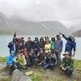
Small Group Size
Our batch sizes are capped at 15 for smaller treks with the trek leader and trekker ratio of 1:8. This ratio, in our years of experience, has proven to deliver the best trekking experience for individuals as well as groups. Capping the size of the group ensures individual attention to each trekker so that no signs of distress or need during the trek go unnoticed. It also helps to form a more cohesive cohort with better group energy which helps define the rhythm and pace of days on the trek. As you go higher up on the BRS scale, since the stakes are higher, expeditions have an even smaller group size with the ratio of expedition leader to climber set at 1:2.
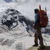
Qualified Trek Leaders
We follow a rigorous regime of hiring and training our experts in the field. Each trek leader is a certified mountaineer with years of experience in the field. In addition to their qualification, they also go through practical and situational training to tackle any and all kinds of sudden conditions that may present themselves on the ground. Being unpredictable is the core nature of the mountains but being ready for any circumstance as best as possible is a controllable asset that we try to nurture. Our field experts are also trained in basic medicine and first-aid response. Watch: Forerunners - The Making of A Trek Leader At Bikat Adventures

Guided Progression
Since Bikat Adventures is a learning-based organization, we help you climb up the ladder of difficulty within the sphere of outdoor adventure systematically. Our on-ground training modules are designed to handhold you through the upskilling process so that you are ready to take on bigger challenges.

Equipment Quality and Check
All the gear used on our treks and expeditions is tried and tested, maintained for good quality, and is overall top-notch in quality and condition. We are continually looking to obtain the best of everything there is in the market so as to ensure optimum safety.
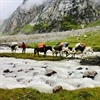
Support Systems
Along with the staff you see on-ground, we have a team of superheroes working in the background to give you the best experience possible. Our background team also comprises local staff from each area who know the region best. Having local support helps with studying the area, pre-planning, execution, and in receiving timely support in case of emergencies in these remote locations.
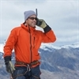
Communication
Our on-field staff is in constant contact with our teams based in primary locations so as to eliminate any avoidable delay in reaching additional help and support when required. We try to use the best tools for communication available, including satellite phones, in regions where they are not restricted.
What our customers Say


Cancellation Policy
Cash refund
Cancellations up to 60 days prior to departure date
Between 60 days upto 30 days prior to departure date
Between 30 days upto 10 days prior to departure date
Less than 10 days prior to departure date
Voucher refund
Cancellations up to 30 days prior to departure date
Between 30 days upto 15 days prior to departure date
Between 15 days upto 10 days prior to departure date
Less 10 days prior to departure date
Please Note:
- Cash refund is applicable only in case of bookings made without using any promotional offer code or Cancellation Vouchers or Discounts. "Cash Refund will be processed in 7-14 working days."
- This is only a brief of cancellation terms. For finer details please refer Detailed Cancellation Policy.
Blog Posts
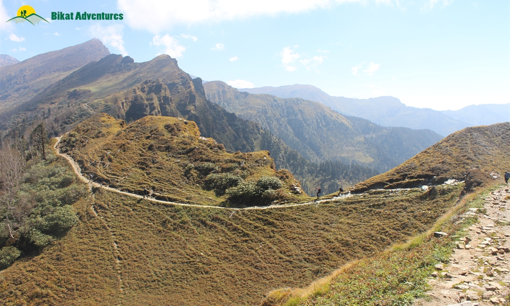
Highlights of Phulara ridge
Informative
Sankri, the famous base village of Uttarakhand, has a rare and radiant ridge trek called The Phulara Ridge trek. This unusual Himalayan ridge is barely discovered by trekkers and is yet to be heard of by the masses. Situated at 3,700 M, Phulara Ridge...
Read full
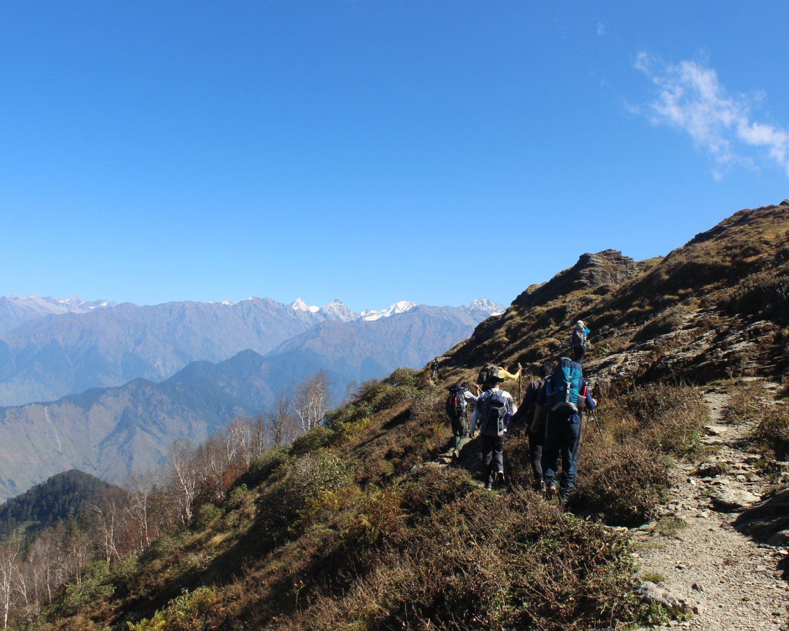
Phulara Ridge: Who is This Trek Meant For?
Informative
Phulara Ridge is a heavenly corridor that gracefully extends between lush meadows, valleys, and peaks of the Sankri Range in Uttarakhand. Set at 3,700M, this unusual ridge is still untouched. It has some great scenic surprises for beginners and avid ...
Read full
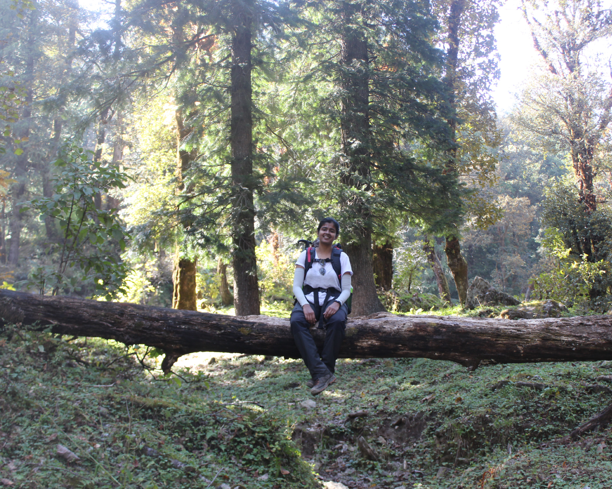
Phulara Ridge Trek – A Photo Story
Photo Story
In a stint to explore new Himalayan destinations, we stumbled upon Phulara Ridge which is a unique and untouched wonder from the Sankri Range in Uttarakhand. For those with an insatiable thirst for something new, the colossal Phulara Ridge can satisf...
Read full
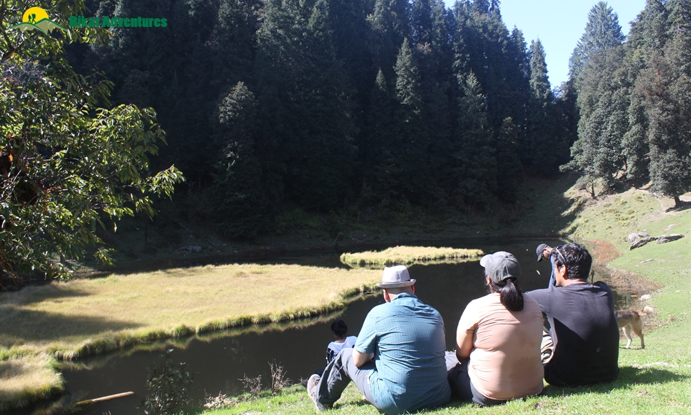
The Lives of Leaves in Phulara
Experiential
Kung Fu Panda comes from the Panda village.
He-man lived in Eternia.
Smurfs had their own Smurf village.
Aladdin became the king of Agrabah.
Harry Potter went to the magic world of wizards.
&
Officer Judy was t...
Read full
Similar Adventures
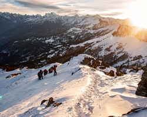
Kedarkantha Trek
The Perfect Summit Trek for Beginners
Uttarakhand
6 Days
BRS 2
3810 m
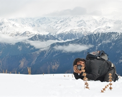
Dayara Bugyal Trek
A Short Escape for a Long Weekend
Uttarakhand
5 Days
BRS 2
3750 m
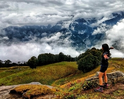
Bhrigu Lake Trek
A Weekend Escapade into the prettiest grassland of Himachal
Himachal
3 Days
BRS 2
4267 m


{kind=link}
{kind=link}
{kind=link}
{kind=link}
{kind=link}
{kind=link}
{kind=link}
{kind=link}
{kind=link}
{kind=link}
{kind=link}
{kind=link}
{kind=link}
{kind=link}
{kind=link}
{kind=link}